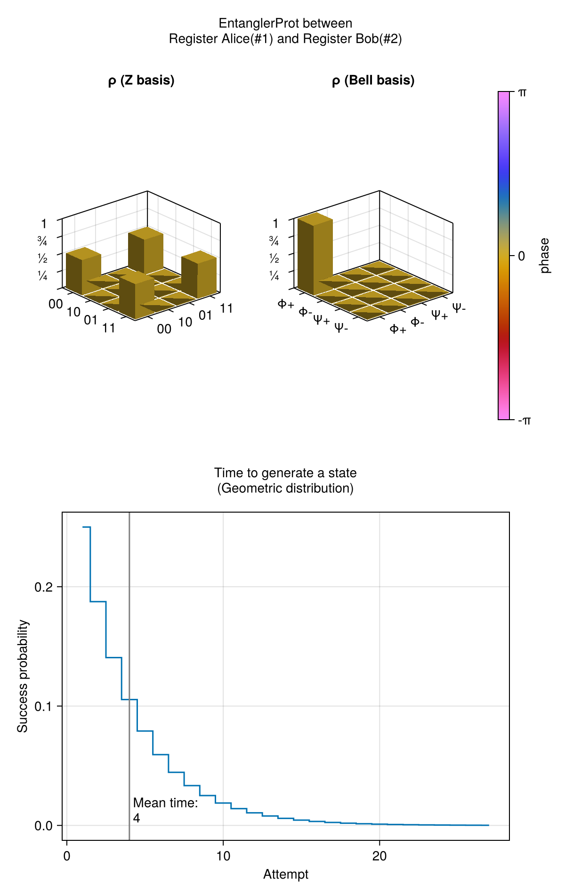
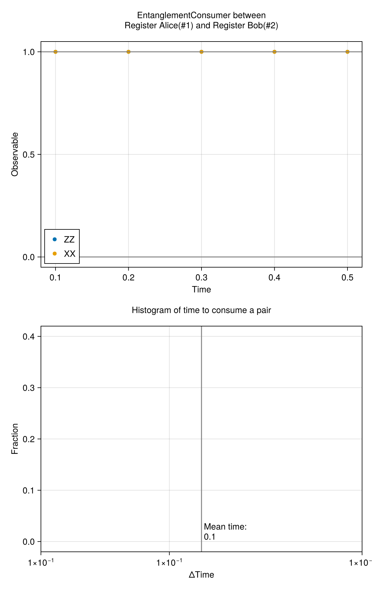
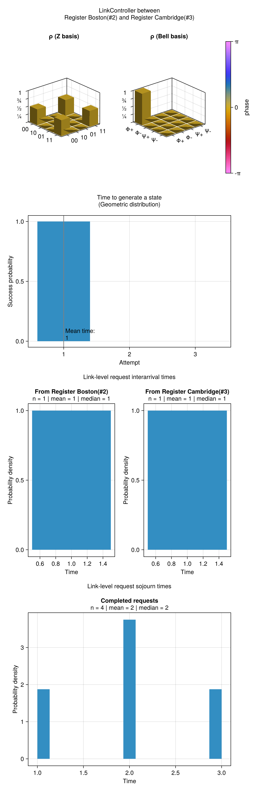
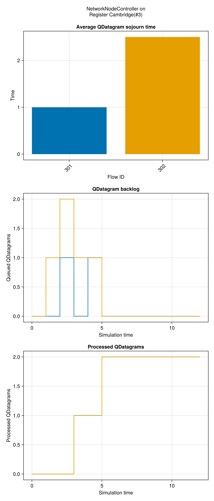
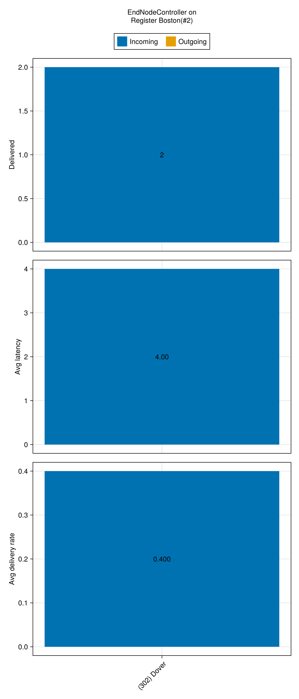

Protocol Visualizations
Protocols can provide rich text/html and image/png displays for notebooks, integrated development environments, and other rich display frontends. This page shows both renderings for every protocol that implements them.
EntanglerProt
text/html
EntanglerProt protocol
on Register Alice(#1) and Register Bob(#2)
- Success probability per attempt
- 0.25
- Mean time to generate a state
- 4.0
image/png

EntanglementConsumer
text/html
EntanglementConsumer protocol
on nodes Register Alice(#1) and Register Bob(#2)
- Consumed pairs
- 5
- Total time
- 0.5
- Average time between pairs
- 0.1
- Average observable of ZZ and XX
- 0.9999999999999997 | 0.9999999999999997
Log
| Time | Observable 1 | Observable 2 |
|---|---|---|
| 0.100 | 1.000 | 1.000 |
| 0.200 | 1.000 | 1.000 |
| 0.300 | 1.000 | 1.000 |
| 0.400 | 1.000 | 1.000 |
| 0.500 | 1.000 | 1.000 |
image/png

LinkController
text/html
LinkController protocol
on Register Boston(#2) and Register Cambridge(#3)
Entanglement generation
EntanglerProt protocol
on Register Boston(#2) and Register Cambridge(#3)
- Success probability per attempt
- 1.0
- Mean time to generate a state
- 1.0
Link-level request interarrival times
Register Boston(#2)
- Requests
- 2
- Mean interarrival time
- 1.0
- Median interarrival time
- 1.0
Register Cambridge(#3)
- Requests
- 2
- Mean interarrival time
- 1.0
- Median interarrival time
- 1.0
Link-level request sojourn times
- Completed requests
- 4
- Pending requests
- 0
- Mean sojourn time
- 2.0
- Median sojourn time
- 2.0
Request log
| Originator node | Arrival time | Sojourn time |
|---|---|---|
| 2 | 1.0 | 1.0 |
| 3 | 1.0 | 2.0 |
| 2 | 2.0 | 2.0 |
| 3 | 2.0 | 3.0 |
image/png

NetworkNodeController
text/html
NetworkNodeController protocol
on Register Cambridge(#3)
Per-flow QDatagram statistics
| Flow ID | Current backlog | Average sojourn time | Processed QDatagrams |
|---|---|---|---|
| 301 | 0 | 1.0 | 2 |
| 302 | 0 | 2.5 | 2 |
image/png

EndNodeController
text/html
EndNodeController protocol
on Register Boston(#2)
Flows
-
Flow
302: Register Dover(#4) → Register Boston(#2)
Performance
| Flow | Delivered | Average end-to-end latency | Average delivery rate |
|---|---|---|---|
302 |
2 | 4.0 | 0.4 |
image/png
